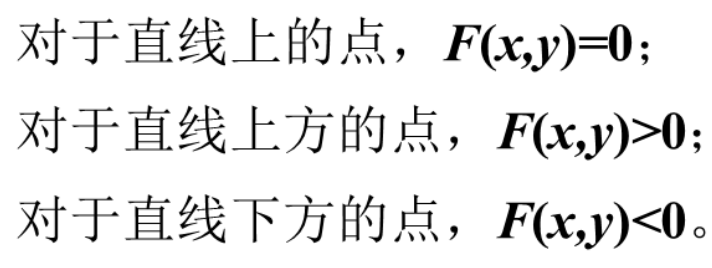

图元渲染
线line
直线方程法
y=kx+bΔx=x1−x0Δy=y1−y0k=Δy/Δxb=y0−kx0
DDA数值微分
y=kx+b
算法
- 计算Δx，Δy，k
- 判断主方向
std::abs(dx) > std::abs(dy) 以 x 为主方向std::abs(dx) < std::abs(dy) 以 y 为主方向
- 主方向坐标+1，计算坐标
- 以 x 为主方向：yi+1=yi+k，x0<x1
- 以 y 为主方向：xi+1=xi+k1，y0<x1
- 坐标取整，渲染
特殊线
中点算法
F(x)=y−kx−b=0

算法
- 计算Δx，Δy，k
- 判断主方向
std::abs(dx) > std::abs(dy) 以 x 为主方向std::abs(dx) < std::abs(dy) 以 y 为主方向
- 计算决策变量d
- 以 x 为主方向
- d0=21−k
- d<0，(x,y)->(x+1,y+1)，d+1−k
- d>0，(x,y)->(x+1,y)，d−k
- 坐标取整，渲染
Bresenham算法